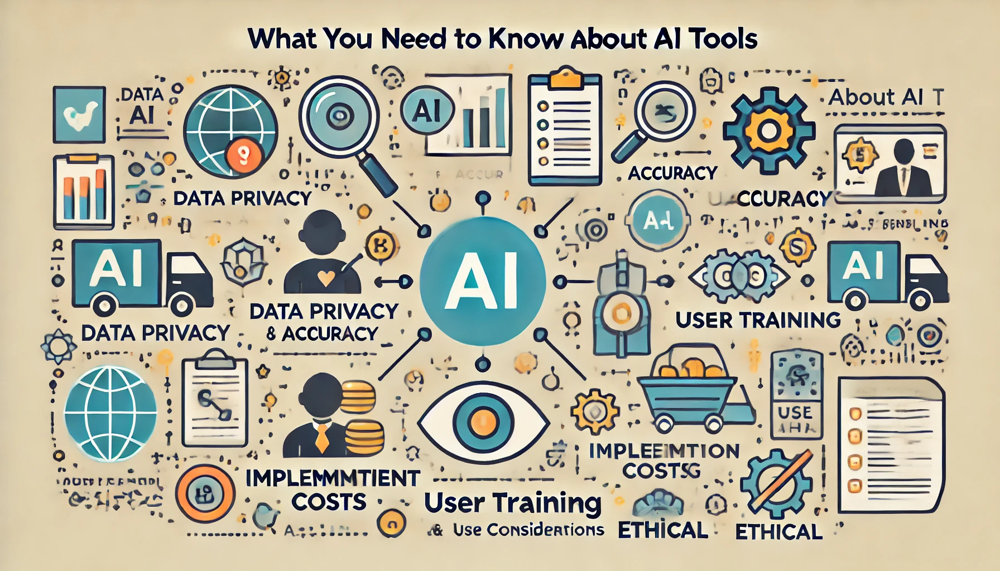
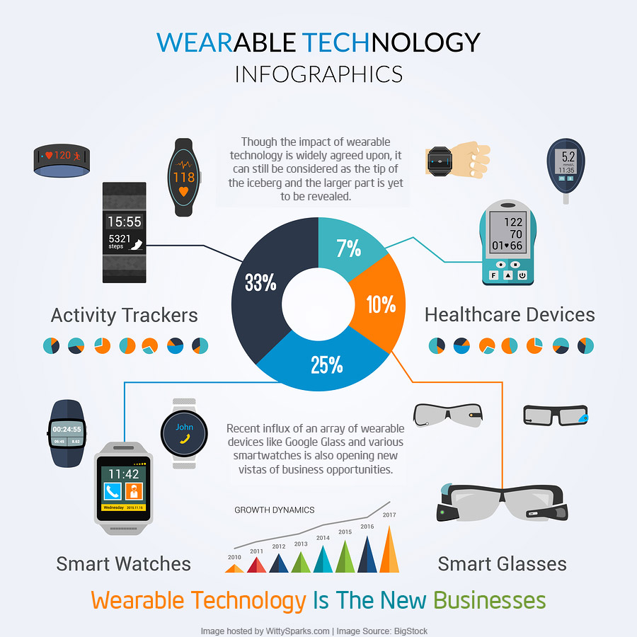
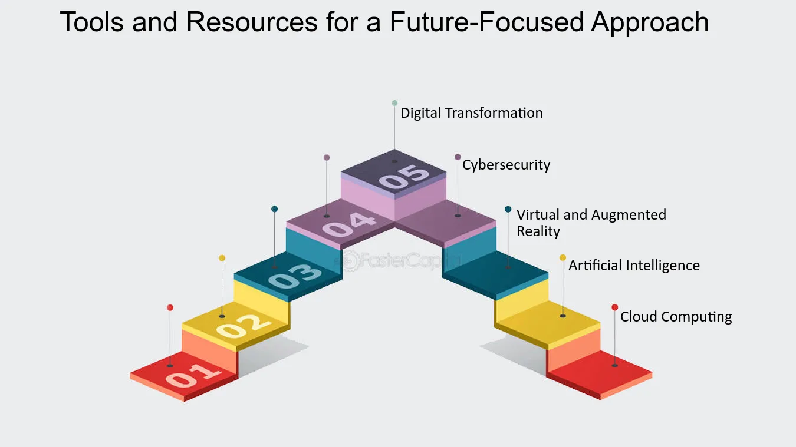

The Future of Focus Tools & Digital Wellness
Emerging Technologies
As the digital landscape evolves, focus tools are increasingly driven by cutting-edge technologies. Artificial intelligence and machine learning now play critical roles in creating personalized experiences. Future apps will harness these technologies to analyze your behavior, predict distractions, and offer tailored interventions to keep you on track.
Imagine apps that not only block distractions but also adapt to your habits in realtime. Personalized algorithms will assess your workflow and suggest optimal task intervals, while recommendations for digital detoxes become smarter and more proactive.
Innovative Trends
The future is ripe with innovative trends that promise to redefine how we maintain focus and wellness. Expect:
- Deep integration with wearables to monitor and improve your concentration.
- Real-time productivity analytics that provide instant feedback.
- Adaptive digital detox modes that adjust based on your usage patterns.
- Voice-activated and gesture-controlled interfaces to reduce manual input.

Expert Opinions & Research
Industry experts predict that the fusion of technology and wellness will accelerate in the coming years. Recent studies in digital behavior reveal that personalized focus interventions can boost productivity by up to 30%. Experts suggest that the future of focus tools will rely heavily on data-driven insights to create bespoke user experiences.
In interviews, thought leaders stress that the next generation of focus apps should not only block distractions but help build habits that lead to sustained mental clarity and creativity.
(Watch: How Experts are Shaping the Future of Focus Tools)
Final Thoughts
As our digital environment evolves, so too do the tools designed to help us focus. The future promises smarter, more personalized apps that not only block distractions but also learn from your habits to offer tailored guidance. Stay ahead with our deep dive into the trends that will redefine digital wellness and productivity in the years to come.
In essence, the evolution of work culture is inseparable from the tools we use. With the continuous fusion of technology and mental wellness, the next era of focus apps will empower us to work smarter, collaborate more effectively, and lead a balanced life in an increasingly digital world.
Future Trends Checklist
Use this checklist as a quick reference to what to expect and prepare for in the next wave of focus tools: